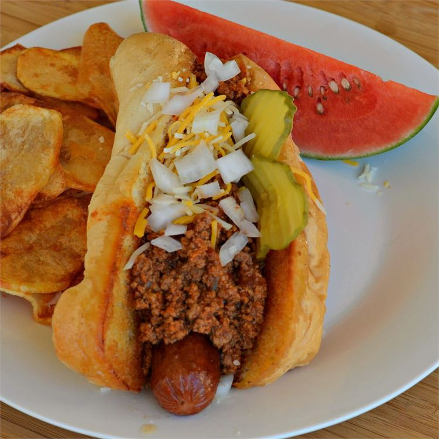

Chili Dog Recipe
Home

Description
This recipe makes a wonderful chili sauce for hot dogs. Just place a
grilled hot dog in a bun and top with chili, grated Cheddar cheese, and
diced onions. Serve immediately. If halving this recipe, cover the pot for
half of the two hour simmer.
Ingredients
- 2 pounds ground beef
- 2 (14.5 ounce) cans reduced-sodium beef broth
- 1 (28 ounce) can crushed tomatoes with puree
- 2 tablespoons chili powder
- 1 tablespoon paprika
- 1 teaspoon onion powder
- 1 teaspoon garlic powder
- 1 teaspoon kosher salt
- ¼ teaspoon cayenne pepper
Steps
-
Heat a large skillet over medium-high heat. Cook and stir beef in the
hot skillet until browned and crumbly, 5 to 7 minutes; drain and discard
grease. Add beef broth to ground beef; bring to a boil. Reduce heat to
medium-low and simmer until liquid is slightly reduced, about 30
minutes.
-
Mix tomatoes with puree, chili powder, paprika, onion powder, garlic
powder, salt, and cayenne pepper into ground beef mixture. Simmer,
stirring occasionally, until mixture is very thick, about 1 1/2 hours.